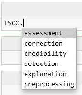

Getting Started#
You find everything you need to get started with TSCC on this page.
Installation Guide#
You have two options to install TSCC to your python environment.
When downloading via pip, you can use the following piece of code:
>>> pip install TSCC
Alternatively, you can download and install the wheel through the pypi website directly. Download the wheel at https://pypi.org/project/TSCC/. On your machine, navigate to the folder in which you stored the wheel. Install the whell via
>>> pip install <name_of_wheel_file>.whl
Import Guide#
Once installed, you can import the package through the following piece of code:
>>> import TSCC
You can access the functions via the modules from the following image.
For example, you can access function imputeNaN_ByFilling in module correction in the following way:
Acess example function#
>>> TSCC.correction.imputeNaN_ByFilling
<function package_dataquality.TSCC.correction.statistical.imputeNaN_ByFilling(df, filler)>